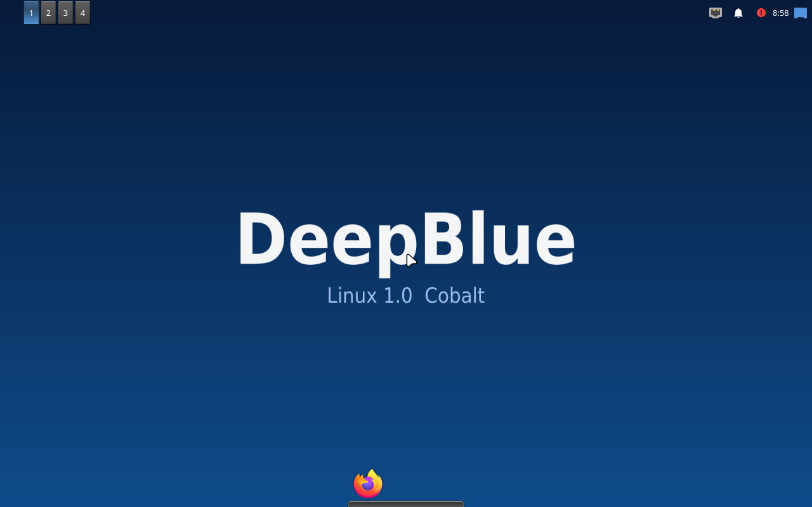

A Deepin-flavoured Debian desktop with its own identity, its own signed archive, and a theme that feels finished. Yeh aisa dikhega jab aap PC pe boot ya install karenge.

Har layer rebranded: window style, icons, cursor, dock, login aur boot splash. Neeche wahi cheezein jo live ISO me chal rahi hain.
Panel upar shift kiya gaya — menu, task list, system tray aur clock, sab DeepBlue QSS me styled.
Bottom me translucent dock — Files, Firefox, QTerminal, Mousepad. picom compositor se real blur.
Qt widget style KvArcDark se recolored — azure highlight, deep-navy base. Native Qt apps ek jaise.
Icon theme Papirus-Dark, cursor Bibata-Modern-Ice, aur GTK apps ke liye Arc-Dark.
Branded boot splash — gradient, pulsing logo, progress bar. Boot ke pehle second se identity.
deepblue-base packages ek signed APT repo se — dependency graph tumhare control me.
Power on karte hi Plymouth splash, phir slick-greeter login, phir seedha DeepBlue desktop.
DeepBlue
Yehi asli wallpaper aur theme se liye gaye colours hain. Kisi bhi swatch pe click karke hex copy karo.